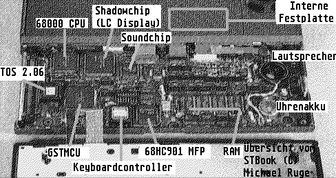

Previous
Next
TOC
Ersatzteil-Teilebezeichnung und das
Blockdiagramm
C104448-001
=
STBook PCB
68HC000-8
= CPU
MC 68HC000 mit 8 MHz in PLCC (U100)
C101775-001
=
Shadow-Chip (LC-Display Controller) (U305)
TC55257BFL-10 = 32Kilobyte * 8Bit
Static Ram fÅE Shadow Chip (U306)
C101779-001
=
6350 ACIA (U200 + U201)
C398789-001
=
DMA-Chip (PLCC) (U600)
RF5C15
=
RF5C15 Realtimeclock/Echtzeituhr, Fa.
Ricoh (U415)
C104512-001
= Leiterbahnfolie zur IDE-Festplatte
C302183-001
=
COMBO-Chip (MCU/GLUE/BLITTER) (U304)
C302365-003GER= TOS 2.06 ROM/EPROM Germany, Typ
27C4096 (U102)
C302362-003USA= TOS 2.06 ROM/EPROM USA vom 3/12/92, Typ
27C4096 (U102)
C104531-001
=
Keyboardcontroller (U703)
MAX241
=
Pegelwandler MAX 241 fÅE die RS232 (U206)
TC518128AFL-10=
Pseudo Static RAM (STBook mit 1MB RAM) (U400 - U407)
YM3439
=
YM3439
Soundchip in SMD (U202)
C104416
= VectorPad
C104585
= Power Connector PCB
= LC-Display, Fa.
Epson /ECM-A0572 9151AA6G
68HC901
=
MFP-Chip
MC68HC901 in PLCC (U203)
C104453
= Kontaktplatte fÅE Akku/Battery
=
Conner CP2044 Harddiskdrive
(42.6MB, 19ms, 4 Heads, 548 Cylinder)
= NiCd Battery Pack 9.6 Volt, 1,3 Ah
= NiCd Akku (
Ersatztyp)
= ACSI DMA Kabel
= Midi Kabel
= STBook Keyboard
Reparaturinfo
= STBook Netzteil Model PSA-4642A
Achtung:
Beim STBook sitzt der Floppycontroller im Geh‰use der externen Dis-
kettenstation und NICHT auf der Hauptplatine des Computers.
Die Oberseite der Hauptplatine des STBook

weiterbl‰ttern
Kapitel STBook Notebook Computer, Seite 1